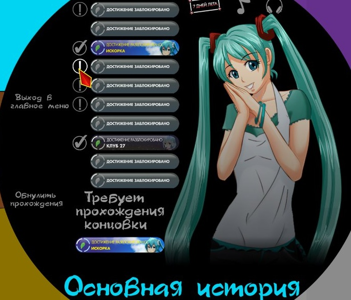

Товарищи,помогите,после прохождения концовки "искорка" она не считается и мне не открываются другие концовки...
Отредактировано My3bIKA (2017-08-29 16:44:30)

7 дней лета |
Вы здесь » 7 дней лета » Мику » Мику-7дл рут


Отредактировано My3bIKA (2017-08-29 16:44:30)

Товарищи,помогите,после прохождения концовки "искорка" она не считается и мне не открываются другие концовки...
Баг-с. Искорка не засчитывается, только через Странные сны выход.
salotor
спасибо

Странный этот рут... Не похож ни на что другое в 7ДЛ. Особенно в конце тяжело становится осознавать что творится, сначала тот сон Семена в конце 6 дня, потом часто сменяющиеся картинки и непонятный текст(мне) после его отключки в автобусе или машине когда они вместе с Сакишитой уезжают. И конечно же по поводу концовки "Спасибо тебе"
Для просмотра скрытого текста - войдите или зарегистрируйтесь.
Поясните кто понял

Странный этот рут... Не похож ни на что другое в 7ДЛ. Особенно в конце тяжело становится осознавать что творится, сначала тот сон Семена в конце 6 дня, потом часто сменяющиеся картинки и непонятный текст(мне) после его отключки в автобусе или машине когда они вместе с Сакишитой уезжают. И конечно же по поводу концовки "Спасибо тебе"
Поясните кто понял
Следующие же за этим строчки достаточно чётко отвечают на вопрос "кто" и "где".
Для просмотра скрытого текста - войдите или зарегистрируйтесь.
Спасибо большое автору за порванную душу и выжатые досуха глаза! Ты подарил приятные воспоминания, которые я буду ещё в глубокой старости вспоминать с эйфорией. (Отдельное спасибо за Мику руты, из алисо- в микуфага за несколько часов). По теме: Я присоединяюсь к людям, которые критикуют этот рут за крайне слабохарактерного семена. Сначала я прошел 7дл-рут, потом Dj-рут. И я бы с удовольствием перепрошел бы DJ, но не 7дл, где Семен превращен в тряпку, относительно Семена в первых днях и DJ рута. Видно, что в 7дл ты попытался раскрыть Мику как можно больше, и, может, в этом руте совсем не осталось место Семену, он превратился в статичного персонажа, фон для Мику. Почему так произошло? На то и рут 7дл о романтике? И мы увидим решительного Семена в классик руте? Ведь это логично, какой бы не был тряпкой в начале лагеря - к концу рутов он должен становиться смелее, его характер изменяться в лучшую сторону, что даже шиза будет лишь соглашаться с ним. Ведь в лагере в Семене должно "воскрешаться" всё хорошее, что было в нем погребено к моменту действия пролога.
Likson
Боже,как же жизненно...
7dl-kun
Автору выражаю почет в высшей степени,ты сделал жизнь,как минимум мою,лучше во многие разы,очень жду продолжения рутов(в частности кошочки)В общем,всего наилучшего тебе)

Вообще не понял концовку "Не похожа". Что там произошло после автобуса, куда Семён попал, и Мику или не Мику с ним говорила. Чёрт ногу сломит, не люблю я такие резкие телепортации в 7ДЛ...
Блин... это были цветочки. Что за Матрица в концовке "Спасибо тебе..."? Мой мозг, пора идти баеньки...
Отредактировано El Jorge (2017-10-26 00:15:27)

Расслабься, это нормально.
Не напомните, в этом ли руте у Семена сон был про бомбардировку и ОД "организовала" учения куда прятаться от вспышки?

Не напомните, в этом ли руте у Семена сон был про бомбардировку и ОД "организовала" учения куда прятаться от вспышки?
Это в руте им.Кошочки и пока ещё нету.
Хм, спасибо, подзабыл уже, надо будет перечитать.
А почему бы и да?
P.S. Если нужно перенести эти мысли в тему Мику-7ДЛ, то я только за. Просто думаю как бы во флуд не превратить.
Лично я сначала подумал, что Семён перегрелся на солнце и задремал. Такие сцены бывали и в Саманте, и в Булках: персонажи внезапно что-то странное творят, а это лишь сон. Но здесь это наяву и... выглядит совершенно неестественно. Мало того, что в разных рутах одной Мику (где всего пара событий отличается в последнем дне) она уже другой характер заимела, так и остальные героини не соответствуют своим. Причём все. Расписывать, почему, долго и нудно, так что просто поверьте.
Для меня это сравнимо с той "банхамерной вишенкой" на выходе с ФЗ-рута.
Отредактировано Regolas (2017-11-03 08:46:14)
Лично я сначала подумал, что Семён перегрелся на солнце и задремал. Такие сцены бывали и в Саманте, и в Булках: персонажи внезапно что-то странное творят, а это лишь сон.
Сны и фантазии, и в 7ДЛ не редкость у Семёна.
Мало того, что в разных рутах одной Мику (где всего пара событий отличается в последнем дне) она уже другой характер заимела, так и остальные героини не соответствуют своим.
Это точно.
Расписывать, почему, долго и нудно, так что просто поверьте.
Зачем расписывать, и так заметно =) У меня был долгий перерыв перед прочтением всех концовок в Мику-7ДЛ (да, первую я оказывается открыл ещё полгода назад, но она мне не запомнилась), и чтением 7ДЛ в целом, поэтому я не сразу заметил нестыковки в поведении персонажей (списывая это на то, что я мог путать характеры с БЛ). Когда начал открывать две не открытые концовки у ОД, стало очевидно. Сейчас пытаюсь выйти на ответвления в сюжетке Лена-7ДЛ, которые я ещё не видел, там тоже заметно стало, как изменились характеры (это я ещё события в первых днях почти полностью пропустил не вчитываясь). Тот же характер Лены вообще меняется всё больше и больше, с выходом новых сюжетных линий. Я бы даже сказал - до неузнаваемости. Характер Алисы я уже вообще перестал понимать.
Для меня это сравнимо с той "банхамерной вишенкой" на выходе с ФЗ-рута.
В плане нелогичности и неуместности? Думаю да, так и есть. Хотя сами по себе идеи могут быть и не такими ущербными, но их реализациях в обоих случаях хромает.
Возвращение "вишенки" (тем более я не застал ту версию мода) я всё же жду, но в переработанном и доведённом до ума варианте. Она должна быть шокирующей, неожиданной, но этому должны предшествовать какие-то значимые события, чтобы логика не терялась а психика ломалась.
Сейчас попытаюсь немного понекропостить, начиная с обсуждения только что вышедшей, на тот момент, сюжетки Мику-7ДЛ (для слабонервных скрыл всё под спойлер):
Скрытый текст:Для просмотра скрытого текста - войдите или зарегистрируйтесь.
Пока что это всё. А ведь только 3-ю страницу прокомментировал =)
Отредактировано El Jorge (2017-11-03 20:29:57)
Некропостинг. Ч.2.
Dantiras написал(а):В P-ветке после прочитанного у меня закрадывалась идея отправиться на катапульте совершать хоть кому-то полезное дело, нежели оставаться в лагере ради сомнительных перспектив. Это, пожалуй, первая катапульта, над которой хочется так поразмышлять (в остальных шансы на восстановление нормальных отношений выглядели куда более существенными) - очень правильное для неё место.
С одной стороны соглашусь. Катапульта там действительно была бы логична, в отличии от других сюжеток, где я не понимал зачем они вообще там, и рассматривались лишь как проверка Семёна "на вшивость" (серьёзность намерений). Здесь же вполне закономерное завершение. Но! Сама по себе катапульта на данный момент выглядит скучно, она не вносит ничего нового в развитие сюжета, и даже не перекидывает Семёна например в другую сюжетную ветку, если на это есть причины: достаточное количество очков у другой пионерки, за первые несколько дней, или повышенное внимание, или частые случайные встречи с одной и той же, и т.п. Поэтому тоже особо смысла не имеет, но задуматься заставляет. И опять же, жизнь Мику уже испорчена(?), ничего после этой катапульты для неё не изменится, т.е. она должна была быть раньше, до отъезда Мику (по логике).
Dantiras написал(а):Вообще, этот рут с сюжетной точки зрения сам по себе реалистичен в наибольшей степени. "Веришь" всем: и ГГ, и Мику, и даже Сакишите с Виолой - а всё потому, что не случилось неестественно резких перепадов настроения у кого-то, как было в некоторых рутах. Эмоции есть, но они сдержаннее, и хорошо показаны с деталями в тексте.
Ну как сказать... у Семёна при отъезде истерика похлеще, чем в БЛ при выходе из Икаруса. Причём не совсем обоснованная, и с неправильными выводами. Да и у Мику бывает от вамп-стервы до мимими настроение резко меняется. Или мне показалось?
Dantiras написал(а):Эксклюзивы. Полный набор гудообразных концовок - от подобного "Обязательно дождись" Не похожа до скромной Можно? для Дрища. Все три очень удачно показывают особенности типажей героев и несут в себе черты "не-совсем-хороших" концовок - действительно получились эксклюзивы. Подходят для второго уровня раскрытия подробностей, хотя Локи-версия Ты пойдёшь со мной? в этом плане более содержательна.
На мой взгляд у Локи получилась самая удачная. Остальные я, честно, даже не запомнил. Может быть перечитаю на досуге.
Dantiras написал(а):"Чёртов процессор". Послабее концовка относительно Экземпляра, но вполне достойная. Бэд-энд as it is. Оставлен простор под размышления о том, что же это за контакт скайпа и нет ли связи с другими концоовками.
Я так понял, что этот контакт, это чат-бот, который создал Семён сам для себя же. Или я не то думаю?
Dantiras написал(а):4. Вновь был расширен перечень использованных способностей RenPy - теперь была использованы длительные анимационные блоки в виде салюта и падающего снега. Всегда приятно, когда увеличивается чтсло возможных средств выразительности.
Снег офигено получился. Он у меня появился даже в одной из сюжеток БЛ, вроде у Слави в концовке на автобусной остановке. Я ведь ничего не путаю, его там раньше не было? Но выглядит шикарно.
Всё жду когда в 7ДЛ добавят анимацию глаз. Уже где-то встречалась, тоже очень в тему смотрится, и немного оживляет статичные спрайты.Gr0m написал(а):1. Новая музыка в целом понравилась, за исключением uneven_me.ogg. Для меня теряется половина атмосферы, когда в композиции, передающей состояние героя, начинает кто-то запевать. К чертям ломает 4-ю стену. Было бы неплохо найти версию без слов или на что-то заменить, если таковой нет
Хм... странно, но мне наоборот показалась эта композиция очень уместной там, где она есть в сюжетной ветке. В т.ч. вокал нисколько не смущал.
Отредактировано El Jorge (2017-11-03 23:02:38)
Технократ написал(а):Ну и третий вариант - кто-то очень тщательно моет мозг Семену по поводу расстояний до объектов. (И хоть убейте, но снабжать лагерь каждый день едой, отправляя машину на суммарное время пути в 10-12 часов...
Поезд не так уж далеко от лагеря проходит. Возможно машина снабжения не ездит до самого города, а загружается с ж/д станции через которую поезд ездит, и загружается с него.
ArlertZero написал(а):Тогда то, что Семен засыпает можно считать "побочным эффектом", смягчающим переход. В принудительном режиме отрубает его и как бы он не старался, весь процесс пути увидеть не сможет.
Либо наоборот его отрубает потому что во время перехода идёт перегрузка. Как на самолёте например.
Sitzileon написал(а):Перечитал попытку побега в 4 дне сыча, понял, что у Дрища с Локи тоже не всё так просто. Мало того, что Семён отключается перед падением с велосипеда, так его ещё и при высоком lp_us что-то или кто-то приводит к Ульянке и говорит им фразу, которую от Семёна слышать довольно странно, но одному из персонажей в лагере она очень подходит. И персонаж этот знает о кашке гораздо больше, чем остальные.
Это где такая сцена была? Вообще не помню.
salotor написал(а):Меня эта композиция тоже несколько смущает. В 7дл почти нет музыки с вокалом, лишь в виде исключений присутствует там, где уместна, но Alt-J - Intro - не этот случай, кмк. Вокал отвлекает от чтения и вредит атмосфере (особенно "yeah" детским голоском в хентай сцене, ага).
Почему детским? Женский же голос =) Кстати это "yeah!" вполне удачно вписывается, на мой взгляд =)
Dantiras написал(а):Так что в данном случае мы имеем либо out of character, либо развитие известных идей камео, особенно известных среди Славяна-филов. Дрейф восприятия характера Лены стал просматриваться с Сл-Классик-рута, где начали вылезать различные неприглядные микросюжеты в 6-7 дни. И если предыдущие события были нормальными (в Славе, в Ольге), то, на мой вкус, тут палка уже перегибается куда-то не совсем туда.
Здесь видна частичная аналогия с камео Слави в прошлых версиях различных рутов, где она выступала как крайне неприятный персонаж без чувства такта и принципов, а также основной созидатель транзитов или близких к тому ситуаций. Развивая мысль, можно отметить, что практически все камео героинь в чужих рутах редко вызывают у меня какое-то особенное сочувствие или симпатию. Что-то здесь не так...
Да, но камео должно на что-то влиять, а не просто для галочки. Как правило если узнаются какие-то новые подробности о других персонажах в не их сюжетных ветках, то они хоть как-то, но вписываются в суть. Или же на что-то влияют. Здесь и не вписывается, и ни на что не влияет.
Red cap написал(а):Я сам не очень понял зачем ей курить. Причина "выпендриваться" не работает мне кажется, т.к. Она скорее всего курила с Алисой еще до прихода гг. Или она знала, что он придет? Единственная причина, по моему - это просто баловство.
Баловство тоже не подходит. Баловство в той сцене было у Мику. В случае с Леной объяснение в самих 7ДЛ было следующим: "Семён, ну ты ж вообще типа не очень наблюдательный. Тут вообще даже на линейке все курят в строю, пока ты харю в подушку плющишь." - в общем не убедительно.
Red cap написал(а):По поводу того, что Мику слишком идеальная. Тут всё просто. Или не совсем. Но я думаю причина одна - она куда больше ребенок, чем все остальные девочки и ввиду этого меньше всех испорчен. У каждой - Лены, Алисы, Слави - случались сложности по жизни, в отношениях, семьях. А Мику слишком мало еще повидала мир, чтобы так сказать взять в себя все его аспекты. Возможно в будущих рутах вскроются какие-нибудь нелицеприятные её черты.
Эм... а как насчёт травли в школе сверстниками, и соучастие в травли другой сверстницы, которая погибла пока все смеялись? Так что я не согласен, Мику возможно повидала не больше, но и не меньше, чем все остальные.
salotor написал(а):Еще хотел бы добавить в копилку героя-аутиста: если в дж-руте Семён вполне ожидаемо отреагировал на всплывший факт того, что Мику - вокалоид, то в 7дл-руте его реакция изменилась до уровня "Ну ок".
Тоже не понял этого факта. Причём в ДЖ-руте хоть и была реакция чрезмерно эмоциональная и истеричная у обоих, что Мику, что Семёна, то здесь вообще пофиг на этот факт: "Чё я в жизни вокалоидов не видел чтоли? Подумаешь...".
Dantiras написал(а):Честно говоря, мы с Арли, когда затрагивали часть этих тем обсуждая в ЛС рут, в шутку друг другу сказали: "А не фантазм ли у нас прямо с 4-го дня?". Мне кажется, что в этой шутке есть что-то кроме самой шутки.
А не фантазм ли весь Совёнок в целом?
22й написал(а):Курение Лены в 6-й день.
А вот то, что Алиса и Славя оказались вместе и вполне мирно общаются это нормально. Хотя, как минимум после событий первого и второго дня, в том же ДЖ они тщательно избегают друг-друга. Да и не только в ДЖ-руте у Алисы на Славю аллергия.Столько доводов против этой сцены, а автор почему-то ни на одну претензию ничего не ответил. Ни загадкой, ни намёком, ни прямо. Видать нет объяснения этой сцене всё же. Громкий вывод? Возможно. Не я автор. Но чтобы эта сцена имела право на жизнь, нужно реально переписать практически весь мод, изменив характеры персонажей до неузнаваемости. И тут будет похлеще изменение, чем просто с Мику-дитё, до Мику-стерва. Хотя Мику-стерва у меня тоже в голове не укладывается, но её трансформации целая ветка посвящена, и более-менее логична.
Amaurea написал(а):На мой взгляд, out of charakter для всех участников, кроме Алисы.
Для Алисы тоже. Наличие Слави во время этой вакханалии - тому пример. Более-менее там только Мику естественно себя ведёт, и то так... с натяжкой получается, учитывая все остальные факты.
Regolas написал(а):Не знаю, почему-то чем дальше уходит мод, тем более отталкивающе выглядит Семён и тем меньше интересуют события
И тем больше забываются уже написанные сюжетные ветки, и характеры ключевых персонажей. Одни раскрываются, другие улетучиваются... я вот тоже уже позабыл характер Лены и Слави из Славя-Классик. Лена-7ДЛ сейчас перечитывать начал, и ещё больше различий замечаю в её характерах. Да, именно во множественном числе, тут одним точно не обойтись. Пора уже каждой героине придумывать аватаров, как у Семёна: Локи, Герк, Дрищ. И ещё каждой по индивидуальному внутреннему голосу.

Хм... странно, но мне наоборот показалась эта композиция очень уместной там, где она есть в сюжетной ветке. В т.ч. вокал нисколько не смущал.
=
Спустя полгода, пожалуй, откажусь от своих слов. Практика показала, что большинству это музыкальное решение пришлось очень даже по вкусу. Да и перечитывая в моде те же сцены с "сурогатом" от дождиков, понял, что нынешний трек уже не так красочно передает ту атмосферу...

El Jorge написал(а):Ну как сказать... у Семёна при отъезде истерика похлеще, чем в БЛ при выходе из Икаруса. Причём не совсем обоснованная, и с неправильными выводами. Да и у Мику бывает от вамп-стервы до мимими настроение резко меняется. Или мне показалось?
1. Инфантилизм, десу. У ГГ, бишь. Игрушку отняли - он расстроился и бяку сказал. На мой взгляд, вполне нормально для Локи.
2. Этим, вообще-то, страдают все героини, кроме Алисы разве что. Мимими(уняня)-вамп переходы только по степени отличаются. Примеры есть и в руте Слави подобного.
У Алисы (внезапно) труёвой цундерности как раз и нет - от скромности и закомплексованности, поди. =)El Jorge написал(а):Я так понял, что этот контакт, это чат-бот, который создал Семён сам для себя же. Или я не то думаю?
Оно самое. Без дополнительных уточнений я бы, правда, не стал развивать гипотезы об этом моменте как точкой начала цикла механодевочек вообще.
El Jorge написал(а):Я ведь ничего не путаю, его там раньше не было?
Не было. И в ванильке анимации такой нет. Заимстовавния и перенимание опыта от других ВН увеличивает качество собственного контента.
Gr0m написал(а):Спустя полгода, пожалуй, откажусь от своих слов.
Считаёте меня ретроградом, но "стилистически неблизко" для моего понимания визуальной новеллы. Со скуки читал в последний год разные ВН японского строения - остался при своём исходном мнении.
El Jorge написал(а):Да, но камео должно на что-то влиять, а не просто для галочки. Как правило если узнаются какие-то новые подробности о других персонажах в не их сюжетных ветках, то они хоть как-то, но вписываются в суть. Или же на что-то влияют. Здесь и не вписывается, и ни на что не влияет.
Есть подозрения (на то были намёки на старом форуме), что эта штука с камео как раз ничего не открывает от истинной природы героини. То ли преломление образа другой героини в чьих-то глазах, то ли какая-то подстройка под складывающуюся ситуацию. Здесь не всё так просто и однозначно, как может показаться. Но сурьёзных перегибов больше нет: для меня куда важнее, чтобы главгероини в своих именных рутах не теряли своего лица и не превращались невесть во что.
El Jorge написал(а):А не фантазм ли весь Совёнок в целом?
Сон кота©.
В общем плане, конечно, какая-то симуляция с предсмертного момента (a la ситуация с Сэйбер из Fate/stay night - от Камланна до Камланна). Но про 4-й день я всё ж не просто так говорю: тут разные независимые косвенные свидетельства.El Jorge написал(а):Хотя Мику-стерва у меня тоже в голове не укладывается, но её трансформации целая ветка посвящена, и более-менее логична.
А я вот такого гипертрофированного изменения не увидел в рамках конкретной ветки. По-моему, в пределах погрешности от действий ГГ (и было бы странно, если на таком коротком временном промежутке это ещё б и работало на всю мощь), ибо примеры подобного её поведения можно узреть и в других ветках тоже.
Отредактировано Dantiras (2018-01-07 16:57:01)
Dantiras написал(а):1. Инфантилизм, десу. У ГГ, бишь. Игрушку отняли - он расстроился и бяку сказал. На мой взгляд, вполне нормально для Локи.
Ну не знаю даже... по мне так он повёл себя скорее именно как "дрищ".
Dantiras написал(а):2. Этим, вообще-то, страдают все героини, кроме Алисы разве что. Мимими(уняня)-вамп переходы только по степени отличаются.
В том то и дело, что таким по сути в основном страдала Лена, что вполне закономерно. А вот от Мику и Слави такого не ожидалось (хотя мне почему-то понравилось в Славя-классик это, сделало её более живой что ли).
И всё же у Мику они ярче и сильно выделяются, особенно если сравнивать с Мику-ДЖ.Dantiras написал(а):для меня куда важнее, чтобы главгероини в своих именных рутах не теряли своего лица и не превращались невесть во что.
Я все сюжетки прочитываю, чтобы в первую очередь увидеть характеры и остальных девочек, как они выглядят со стороны, и какое у них поведение, когда они уходят на второй план, чтобы расширить понимание их характеров. А тут получается, что когда они уходят на второй план, они это уже и не те самые, а другие, отыгрывающие свою роль в образе одной из девчонок. Так не интересно
Dantiras написал(а):Но про 4-й день я всё ж не просто так говорю: тут разные независимые косвенные свидетельства.
Я всё ещё не совсем понимаю, что в 7ДЛ можно считать фантазмом, а что нет. Т.к. уверен,ч то всё происходящее и есть фантазм, а вот представить фантазм внутри фантазма... мне что-то не получается.
Dantiras написал(а):ибо примеры подобного её поведения можно узреть и в других ветках тоже.
Разве? Например?
El Jorge написал(а):Я всё ещё не совсем понимаю, что в 7ДЛ можно считать фантазмом, а что нет.
Хех. Как будто я понимаю. Догадки, но уверенности-то шиш. =)
Но мне думается, что возводить все ответиусы Сл-Кл до уровня абсолютной истины все7ДЛьного масштаба - несколько притянуто, бо есть противоречия по форме и характеру проявлений и фантазмов.El Jorge написал(а):Ну не знаю даже... по мне так он повёл себя скорее именно как "дрищ".
Славя-цобакен-катапульта верса Сл-Кл - яркий пример подобного взрыва юной души Локи. Вектор строго противоположный, но модуль весьма близок. По отношениям с Ксаной это кстати тоже видно.
El Jorge написал(а):Так не интересно
И срачей это породило массу.
Однако, я не считаю, что от самого подхода камео произошёл отказ. Специфика-с.
Хотя на фоне сюжетных новелл со строгим порядком прохождения рутов сей факт очень режет глаз. На самом деле, мне даже кажется, что для полного раскрытия мироздания и формирования чёткой картины руты в 7ДЛ должны были бы иметь иерархию в зависимости от прохождения неких низкоранговых предшественников (моё мнение - никому не навязываю). Но уж как есть, хотя и сумбурно.El Jorge написал(а):А вот от Мику и Слави такого не ожидалось (хотя мне почему-то понравилось в Славя-классик это, сделало её более живой что ли).
El Jorge написал(а):И всё же у Мику они ярче и сильно выделяются, особенно если сравнивать с Мику-ДЖ.
Там была девочка, тут заматерела (накопила опыт?).
Всё хорошо в меру. У Славяны таких резких переходов нет. Для Лены, как Вы и сказали, это ожидаемая норма.El Jorge написал(а):Разве? Например?
Там мелочёвка в основном: фраза так, фраза сяк, не сцены, конечно. Мику в 7ДЛ остаётся героиней с одним характером лишь черты где-то сглаживаются, а где-то обретают форму (о причинности молчу - раньше всё сказал). С ДЖ разница фатальна.
Отредактировано Dantiras (2018-01-07 21:15:42)
Dantiras написал(а):По отношениям с Ксаной это кстати тоже видно.
Вот кстати это то я и подзабыл... а ведь правда, Локи с Ксаной подобно себя вёл, как романтик школьного возраста.
Dantiras написал(а):На самом деле, мне даже кажется, что для полного раскрытия мироздания и формирования чёткой картины руты в 7ДЛ должны были бы иметь иерархию в зависимости от прохождения неких низкоранговых предшественников
Да, тогда бы косяков меньше было, наверняка, но игра была бы более линейна, либо очень сложна в реализации. А она и так сложнее во многом, чем БЛ.
Dantiras написал(а):Там была девочка, тут заматерела (накопила опыт?).
Это было бы логично, будь эти сюжетки по времени друг за другом, но они проходят параллельно! Т.е. по факту мы имеет как минимум два разных персонажа, имеющих один и тот же внешний вид. У них даже прошлое похоже разное, если я ничего не упустил (Мику-ДЖ проходил давно).
Dantiras написал(а):Мику в 7ДЛ остаётся героиней с одним характером лишь черты где-то сглаживаются, а где-то обретают форму (о причинности молчу - раньше всё сказал).
Всё же нет, не могу согласиться. Мику-Н и Мику-Р заметно отличаются по характерам, но не так сильно как в сравнении с Мику-ДЖ.
Хотя... может быть, если в каких-то ситуациях выбирать разные варианты, характерные для разных веток, то и Мику будет вести себя по-разному... ну да, видимо это один характер, но её реакция сильно отличается в зависимости от действий Семёна. Чтобы точнее это попытаться понять, нужно перечитывать, а мне лень. Я сейчас пока забросил 7ДЛ, жду обновления, а там может и перечитаю одну из сюжеток.
А она и так сложнее во многом, чем БЛ.
Конечно сложнее, но проблема линейности решается именно ветвлением внутри рута, а не входом в него. Мы сейчас в первых трх днях уже пришли к линейному набору шагов для выхода на нужный рут.
Так что Ваш аргумент невалидный.
У них даже прошлое похоже разное
Всё же нет. Вокалоидодрама (реакция Мику на неё) и "моя мику" показывают хорошые стыковки с 7дл-рутом.
Пока Ульянка воюет с кашкой, перелистываю мод, разглядывая детали...
Вот интересно вдруг стало: Ульянка (кстати об Ульянке) топила главных героев в 6-дне Хуман-концовок из ревности или чтобы герои перестали ломать комедию перед всем лагерем, изображая дружбу?
По-моему очевидно, что ревность. Хотя кто ж эту маленькую шкодливую разберет.
По-моему очевидно, что ревность.
Первое, что приходит на ум. Но ни с кем другим Ракета так себя не вела.
Хотя кто ж эту маленькую шкодливую разберет.
А это второе.
Вариант с тривиальным стёбом и издевательствами не рассматривается?
Вариант с тривиальным стёбом и издевательствами не рассматривается?
Ууу! Какая противная Уняка!
Вариант с тривиальным стёбом и издевательствами не рассматривается?
Примем, что Улька пакостливая, но не подлая. А ее последующий поступок, это или подлость (но Улька не подлая), или продуманная провокация с какими то, кажущимися ей благородными, целями.
Отредактировано 22й (2018-01-14 06:35:39)
Вы здесь » 7 дней лета » Мику » Мику-7дл рут